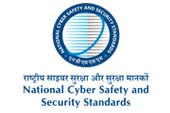
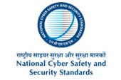
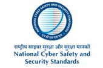

1884 is the landmark year as the foundation stone was laid 136 years ago for Shri Vaishnav Group of Institutions by compassionate cloth merchants of Vaishnav cult of Indore, which was later rechristened as Shri Vaishnav Sahayak Kapada Market Committeein the year 1934.
Vaishnav Vidyapeeth Trust believes in taking the nation forward by improving the quality of life of its citizens by continuously working in the sphere of education, health and environment. It has been established to promote education and research in various disciplines through academic institutions for the benefits of all sections of the society, but not with the motive of profit.
Shri Vaishnav Shekshanik Avam Parmarthik Nyas was established under the able guidance of Shri Vaishnav Sahayak Kapada Market Committee in the year 1981 . Since then, Nyas has been working relentlessly for the upliftment of the society and country as a whole by providing better technical and professional education, health facilities, schools and other services. Shri Vaishnav Sahayak Kapada Market Committee is running the following Trusts, Colleges, Schools and Institutes of Professional Studies and Research and also rendering social service.

Contact as
Shri Vaishnav Vidyapeeth Vishwavidyalaya
Campus : Indore – Ujjain Road, Indore – 453111
City Office : Shri Vaishnav Vidya Parisar, 177 Jawahar Marg, Indore(M.P.)